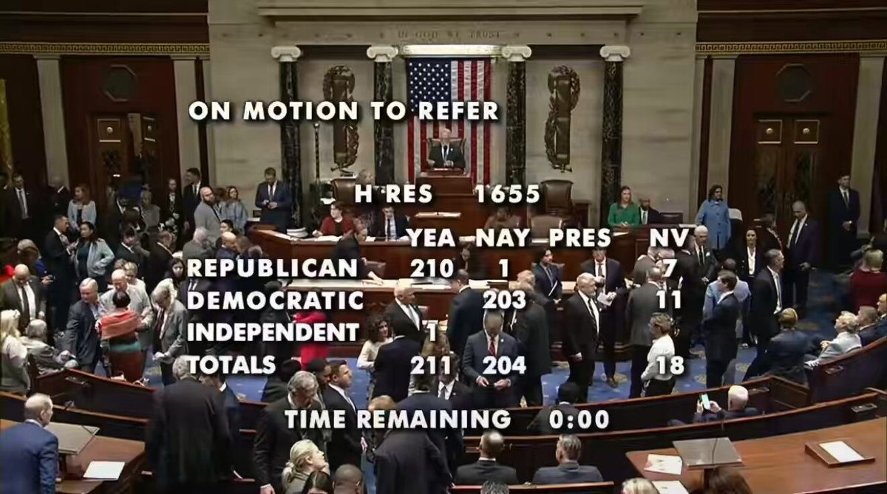
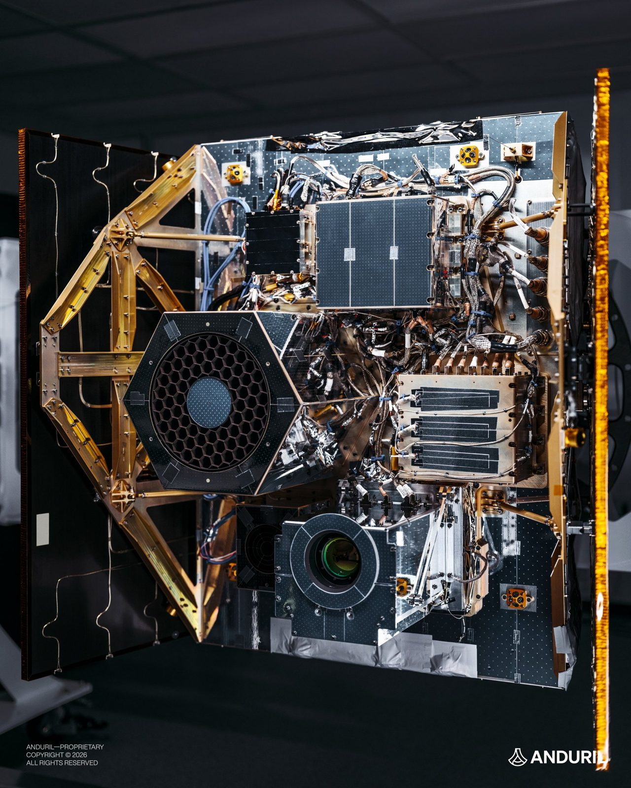
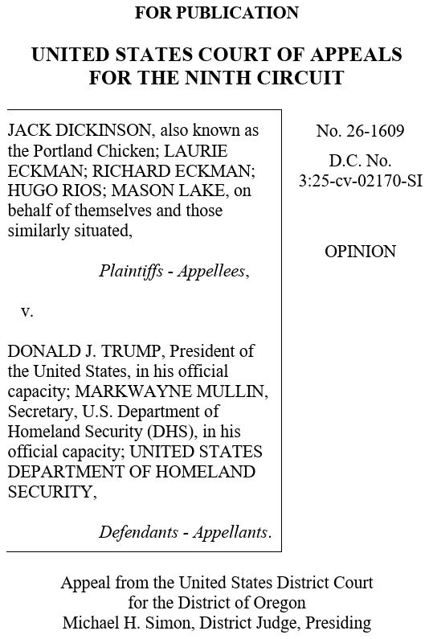
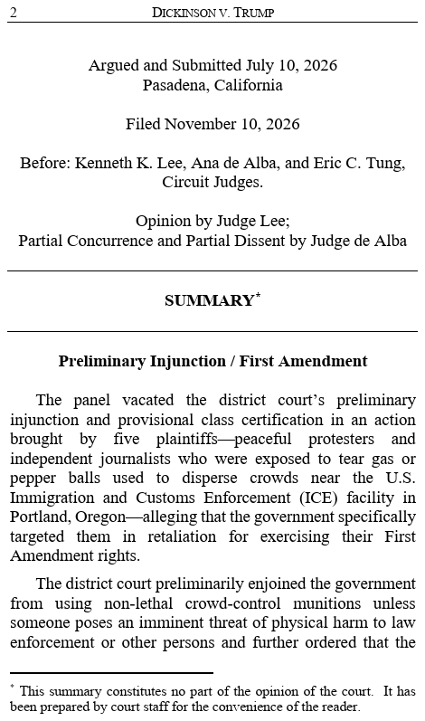
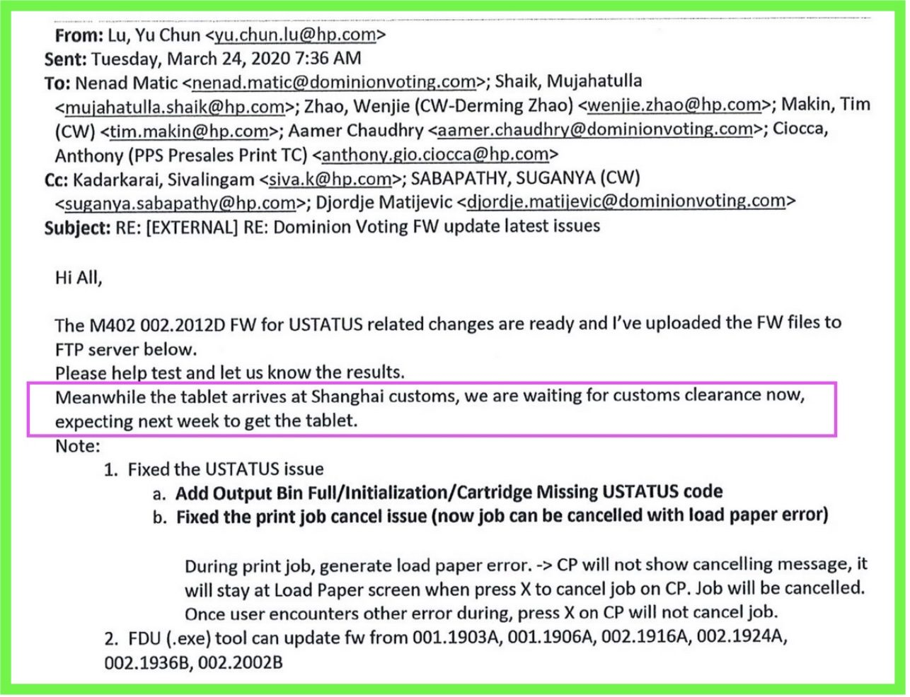
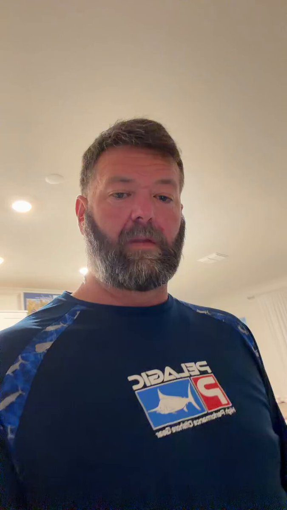
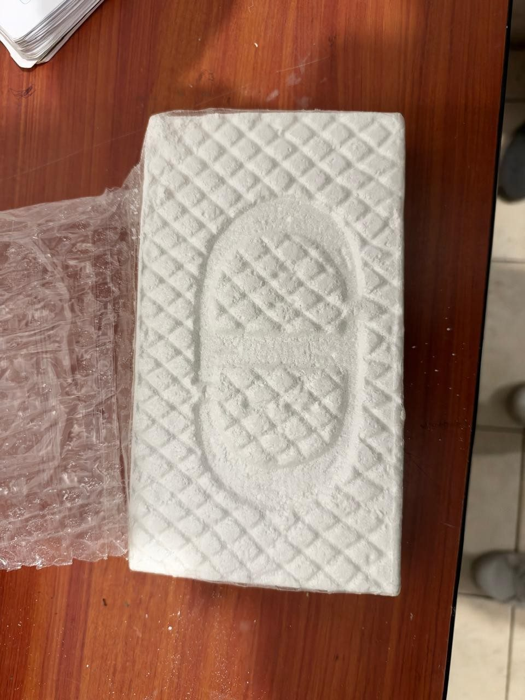

The Freedom 250 Chronicle
House sends the Hegseth impeachment push to Judiciary, 211-204

▶ Watch on XBREAKING: House Republicans voted 211-204 to refer Rep. Thomas Massie’s impeachment resolution against Secretary of War Hegseth to the House Judiciary Committee, effectively killing the measure. Massie was the only Republican to vote with Democrats.
Duffy says a SMART reroute saved a Fort Lauderdale flight 33 minutes
PROOF OUR SKIES ARE GETTING SMART-ER
Every day, I'm posting an example of how our new air traffic control management system — SMART — is saving YOU from endless delays and cancellations.
Last week, a flight out of Fort Lauderdale-Hollywood International Airport carrying 119 passengers was supposed to hit bad weather. The initial plan was to fly around the storm.
That’s when experts in our SMART lab stepped in. Using predictive weather models, the lab developed a new, faster and shorter route. The change saved flyers from a 33 minute delay!
Less time on the tarmac. More time at your destination. That's the power of SMART — more to come 🛫 @FAANews
FCC accepts SpaceX's bid for nationwide 800 MHz spectrum
🚨 BREAKING: The FCC accepts SpaceX's application to acquire nationwide 800 MHz spectrum
Verizon, AT&T and T-Mobile all told SpaceX "NO" when it asked to use their networks. SpaceX is building its own:
This deal with Grain Management secures 546 paired licenses covering ~100% of the U.S. population, on 800 MHz low band that penetrates straight through walls and already works with almost every smartphone.
Once it closes, SpaceX will hold up to 89 MHz of spectrum in every market it touches.
Elon Musk: "This is the last critical piece of the spectrum puzzle needed for SpaceX to provide complete phone coverage in America."
ITS HAPPENING
Amodei says a stronger US military deters wars
“Claude can help US kill more people more quickly ?”
Host: “With the help of LLMs, the US military has gone from hitting 1,000 targets a day to 5,000. That means Claude can help kill more people more quickly. Are you comfortable with that?”
Dario Amodei: “I am supportive of the US being more effective militarily. Having that ability be stronger doesn’t cause wars. It deters wars.”
“Do you want this country to be a more powerful actor on the world stage? I do. I’m a patriot.”
▶ Watch on XAnduril says it built and tested a satellite for watching orbit
BREAKING: Anduril has successfully built and tested a fully integrated satellite, enabling space-based edge computing, long-wave infrared sensing (detecting heat signatures and other characteristics of spacecraft), and dynamic payload power management.
Built and tested in less than two years, Anduril's satellite is designed for space domain awareness missions focused on detecting and tracking spacecraft in orbit.

OpenAI lets businesses claim a page and an agent in ChatGPT
Now in beta: Businesses in ChatGPT.
Claim your business, manage your information, and get insights on how people engage with you.
Eligible businesses can also build a Business Agent to answer customers' questions and help them explore what you offer.
https://openai.com/index/introducing-businesses-chatgpt/
▶ Watch on XClaude says Fable 5.2 handles robots it was never trained on
Fable 5.2 shows substantially improved skills in controlling physical robots, even on tasks it has never explicitly been trained to do.
On RoboDojo, a benchmark with a simulated two-arm robot, it outperformed other models and most AI systems built to control robots.
▶ Watch on XClaude opens Adobe, Atlassian, and Box inside the chat
Also new: with interactive connectors, you can now open the full version of a tool inside Claude. Work in Adobe, Atlassian, and Box beside your conversation. Make changes yourself, or ask Claude to make them with you.
Rolling out on web and desktop.
▶ Watch on XDeepMind ships Gemini Robotics 2.5 for everyday physical tasks
Gemini Robotics 2.5 is here. 🤖
Our latest physical AI is able to learn hundreds of everyday skills - from folding laundry and serving pastries to autonomously sorting car parts on the factory floor.
Here’s a snapshot of its capabilities 🧵
▶ Watch on XAI agents flag an unmapped Maya site; Mexico's institute replies
My AI agents found an unmapped Maya site in Mexico, using LiDAR data from a NASA dataset.
72 hours from a random thought on vacation to a reply from Mexico's national archaeology institute.
What a time to be alive…
▶ Watch on XClaude rolls out Whiteboards, Sheets, and Data
Starting to roll out today: Claude Whiteboards, Claude Sheets and Claude Data.
Think a plan through on a board, build a tracker in a sheet, and tell a story with your data.
 ▶ Watch on X
▶ Watch on XSafety group says Claude now finishes 41% of freelance projects
JUST IN: Center for AI Safety warns AI is rapidly approaching the ability to automate all remote work, as Claude Fable 5.2 successfully completes 41.3% of real freelance projects — up from 2.5% a year ago.
Musk says Starlink's data software suits superintelligence training
Turns out that the Starlink software, built for managing the movement of vast amounts of data through space and to the ground, is also very well suited to training super intelligence
AI 2027 authors say the timeline is five months ahead
SITUATION DETECTED: The authors of the AI 2027 report said this morning that current AI acceleration is now five months ahead of their AI 2027 timeline.
Musk says SpaceX ordered 100 GW a year of solar gear for Starmind
SpaceX has ordered 100 GW/year of HJT solar manufacturing equipment from Singulus in Germany.
This is for Starmind to create a sentient sun.
Trump's border wall is on pace for 1,418 miles of primary steel
🚨Trump’s Border Wall Nears Completion
By the end of Trump’s second term, the Trump administration is on pace to complete 1,418 miles of primary steel bollard wall, 708 miles of secondary steel bollard wall in high-traffic areas, 536 miles of waterborne barriers, and 536 miles of Smart Wall technology coverage in areas with otherwise impassable terrain.
Most importantly, Trump’s new border wall is set to become a permanent feature along the United States’ southern border.
In California, Arizona and New Mexico, the wall sits on the Roosevelt Reservation, a 60-foot-wide strip of land owned by the federal government along the border. In Texas, the federal government has been acquiring private land through eminent domain. Once the government takes the title, the land stays federal.
And even if Democrats regain control of the federal government in the future, Trump’s border wall is set to remain in place. When construction was paused in 2021 under Joe Biden’s directive, the existing wall stayed up despite the Biden administration’s best legal efforts to take it down.
In essence, President Trump has not only illegal-alien-proofed the southern border, he’s Democrat-proofed it as well.
Follow: @MorseReport
HUD says mixed-status housing aid for illegal aliens is over
🚨 ANNOUNCEMENT: Illegal aliens and ineligibles, your days of exploiting the mixed-status loophole in HUD-funded housing are over.
Section 214 of the Housing and Community Development Act of 1980 has long said HUD assistance goes only to American citizens and certain eligible noncitizens.
We are following the law. Promises made, promises kept.
▶ Watch on XNinth Circuit lifts tear-gas limits at the Portland ICE protests
NEW: In a 2-1 vote, the Ninth Circuit lifted court-ordered limits on federal agents' use of tear gas and other crowd-control weapons at protests outside a Portland ICE facility, along with a requirement that agents wear more visible identifying markings on their uniforms.


IBM Consulting will stop sponsoring most visas and green cards
JUST IN: IBM announces it will end visa & green card sponsorship for most roles in its largest division, IBM Consulting.
O'Keefe footage claims a nationwide paid-ballot ring
🚨 BOOM! JAMES O’KEEFE JUST DROPPED A NUKE — WIDESPREAD VOTE BUYING RING EXPOSED NATIONWIDE AS DEMS (AND SECRET RINOS) PAY $5-$8 PER BALLOT TO RIG EVERY ELECTION!
Undercover footage catches these hired guns openly bragging: “I’m bringing in 3500 votes”… “He was paying me $5k a month, now it’s $8k!” Even judges and Texas Republicans caught secretly working for Democrats while funneling thousands of fake ballots!
This is the Deep State’s desperate election theft machine in action — our Republic is being sold out in broad daylight for chump change!
We NEED the SAVE AMERICA ACT PASSED IMMEDIATELY + MASS ARRESTS and PROSECUTIONS for these treasonous fraudsters before they steal 2026 too!
FOLLOW ME, THE NEXT DROP WILL BE SHOCKING
Rasmussen posts court filings the legacy press will not cover
Reader Resources
Since American legacy media is forbidden to cover actual developments in new official election fraud evidence, their readers may be unaware of recent court filings and depositions. Here are just three links and some court discovery documents from @SheriffLeaf
Be kind and share?
Virtual Machines -> https://t.co/OBx1Uy2BUs Made in CCP China -> https://t.co/Bg3NTihcas Federal Court Testimony ->

Texas voter rolls top the adult-citizen count in 97 counties
🚨 ELECTION ISSUES: Texas - 97 counties are over the adult-citizen count.
Montgomery County is at 107.6%, 34,319 over.
Collin County is at 104.0%, 30,557 over.
Fort Bend County is at 104.1%, 23,122 over.
Williamson County is at 103.0%, 13,816 over.
Denton County is at 102.0%, 13,466 over.
Those official totals include the 1,763,730 million suspense voters.
Hoft says a fifth of Orange County's 2024 voters were not valid
EXCLUSIVE: Shocking Results Indicate That One-Fifth of the Voters in the 2024 Election in Orange County, California Were Non-Citizens, Invalid or Phantom Voters!
Hegseth calls the impeachment resolution sabotage
.@SECWAR “Let’s be clear about what this resolution actually does.
It tells our enemies — Iran, the cartels, the Houthis, every adversary watching — that the United States will actually punish its own warfighters and its own civilian leadership for successfully executing lawful military operations.
It tells them that a single rogue legislator, loaded with personal animus for the President, can attempt to veto national security decisions made by the Commander-in-Chief.
It puts a target on the backs of American service members by signaling that Congress will undermine their missions in real time.
That is not patriotism. That is SABOTAGE."
Trump says the Hegseth impeachment attempt failed
A poster says only the Executive, not Congress, can answer an invasion
The reason I am completely unbothered, is because I understand that what we need to happen has nothing to do with Congress.
The only way this gets solved is through the Executive branch.
Legally speaking, this is a time of “invasion or rebellion”, which gives the Commander in Chief broad authority to use the Military to conduct law enforcement operations on US soil, as well as the authority to unilaterally suspend the writ of habeas corpus.
People don’t seem to understand the authority that the Commander in Chief has, particularly in times of “invasion or rebellion”. POTUS can legally do whatever is necessary to enforce federal law, safeguard the public, and ensure National Security.
The politicians on Capitol Hill are completely irrelevant to what must be done.
A caucus asks veterans to sue for deportations and treason trials
What would happen if American Veterans organized into weekly meeting groups, learned the law and used it to sue for Mass Deportations and trials for Treason?

▶ Watch on XA call for military intervention, or pitchforks
It’s either time for military intervention or We The People and pitchforks
National security is at stake
I prefer military but also good either way
Rubio says the State Department works for America
SECRETARY RUBIO: We work for America. We don't work for the global order, we don't work for other countries. We work for the United States.
Haitians are said to be feeding Bukele gang coordinates
This is unreal: Haitians are sending Bukele the coordinates of local gang compounds on X and Bukele is taking them out
▶ Watch on XState says it works for the United States, not other countries
We don’t work for other countries.
We work for the United States.
FBI Buffalo helps seize 452 kilograms of cocaine in Ecuador
NEW: FBI Buffalo Investigation Goes International: 452 Kilograms of Cocaine Seized in Ecuador
Three days of surveillance. More than 990 pounds of cocaine seized. One arrest.
An international operation coordinated by #FBI Buffalo's Rochester Safe Streets Task Force, FBI Legat Bogotá-Quito, and the Ecuadorian National Police resulted in the seizure of 452 kilograms of cocaine near the Colombia-Ecuador border and the arrest of a suspected drug smuggler in Ibarra, Ecuador.
The successful operation highlights the strength of international law enforcement partnerships in combating transnational drug trafficking.
Thank you to @FBI Legat Bogotá-Quito, the @PoliciaEcuador and @DEANEWYORKDiv for their partnership in this investigation.
From Western New York to South America, FBI Buffalo remains committed to working alongside our law enforcement partners to disrupt transnational criminal networks and protect the American people.

Trump administration puts $300 million into policing four cities
JUST IN: Trump administration announces $300 million in funding to expand law enforcement & combat violent crime across 4 U.S. cities.
DTCC launches an EU MiFID transaction-reporting service
DTCC has launched its EU-MiFID ARM, an end-to-end transaction reporting solution designed to improve data quality & streamline compliance.
Read more: https://www.dtcc.com/press-releases/2026/dtcc-launches-eu-mifid-arm-expanding-global-regulatory-reporting-access
Securitize buys River One and steps into asset-backed finance
🔥 LATEST: Securitize acquires River One, its first buy as a public company, to expand into the $6 trillion asset-backed finance market.
Four big banks commit $270 million to a joint stablecoin
JUST IN: Goldman Sachs, Citigroup, Santander and Deutsche Bank commit $270 million to launch joint crypto stablecoin.
Kushner says talks moved toward security for a sovereign Ukraine
We are encouraged by the constructive discussions today. At President @realDonaldTrump's direction, we are working to end this devastating war and establish the security arrangements necessary for a sovereign, secure, and prosperous Ukraine and lasting peace across Europe.
US, Russia, and Ukraine hold talks in the UAE
JUST IN: 🇺🇸🇷🇺🇺🇦 US, Russia, and Ukraine hold talks in UAE.
▶ Watch on XNRC permits four advanced reactors at a Dow plant in Texas
BREAKING: Reindustrialization goes nuclear. America approves its first advanced nuclear facility at an industrial site, a major Dow chemical manufacturing plant in Texas.
The Nuclear Regulatory Commission just approved a construction permit for four X-energy Xe-100 reactors, designed to supply both electricity and high-temperature steam to Dow’s chemical manufacturing operations. Chemical production is traditionally a very energy-intensive process, requiring large amounts of electricity and heat.
This marks the first U.S. construction permit for high-temperature gas-cooled reactors in nearly 60 years.
A designer posts a five-link UI kit to save
Si eres diseñador UI/UX, guárdate esto.
1. https://t.co/BsPEDrxmvU → más de 600 prompts de diseño y 200+ componentes con código completo para webs 3D y con scroll 2. https://t.co/1hM8CzxUpJ → 117 shaders animados en 11 estilos 3. https://t.co/FzDq5KQXiv → footers mejores 4. https://t.co/z9rlJ3109Y → inspiración para CTAs 5. https://t.co/zXbLwxoWZu → estilos de productos reales
¿Qué me he dejado?
White House says Trump took on Iran instead of kicking the can
For 47 years, Iran has killed innocent people, protesters, Americans, and has waged war on the West through jihadist terrorism.
President Trump had the courage that no other president had — to take on the Iranian threat with full force.
He didn't kick the can. He kicked their teeth in.
Florida AG subpoenas DSA over Cuba and China money
Today my office issued a subpoena to the Democratic Socialists of America. We’re examining foreign contributions—including from Cuba and China—tied to their delegations and travel fund solicitations.
FL law requires transparency. We will hold those who break the law accountable.
Average work has never paid so poorly, or excellence so well
the penalty for being average has never been so severe, but the payout for being extraordinary has never been higher.
A record 25.2 million Americans under 35 live with parents
25.2 million Americans under 35 now live with their parents, a record high, per Realtor.
Anthropic's CEO says major diseases fall within ten years
Anthropic CEO predicts cancer, Alzheimer's, heart disease, mental illness will be cured in less than 10 years
ACCELERATE